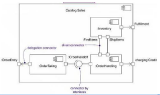
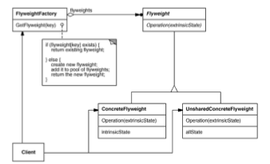

OO Preparation
OO Concepts
Why not Procedural Programming
- Transformation of concepts between (analysis/design) and implementation.
- Hard to reuse, extend, and maintain
Class
A class is a description of a set of objects that share the same properties and behavior.
Abstraction
- Emphasizes relevant characteristics.
- Suppresses other characteristics.
Abstract class and operation
- In the UML, you specify them by writing its name in italics.
Object-Oriented Analysis
- emphasizes on identifying objects in the problem domain and the relationship between objects. (concepts, attributes, and associations)
Object-Oriented Design
- emphasize on defining software objects and how they collaborate to fulfill the requirements.(classes, attributes, methods, and collaborations)
Four kinds of things in the UML
- Structural things
- logic view
- class
- Interface
- collaboration
- requirement view
- process view
- implementation view
- Behavioral things
- Among a set of objects
- For an object
- The sequence of steps
- Grouping things
- Annotational things
Software Component
- A non-trivial, nearly independent, and replaceable part of a system that fulfills a clear function in the context of a well-defined architecture.
- A component conforms to and provides the physical realization of a set of interfaces.
- A physical, replaceable part of a system that packages implementation and conforms to and provides the realization of a set of interfaces.
- A component represents a physical piece of implementation of a system, including software code (source, binary or executable) or equivalents such as scripts or command files.
Patterns and Framework
Pattern
- Provides a common solution to a common problem in a context
Analysis/Design pattern
- Provides a solution to a narrowly-scoped technical problem
- Provides a fragment of a solution, or a piece of the Puzzle
Framework
- Defines the general approach to solving the problem
- Provides a skeletal solution, whose details may be Analysis/Design patterns
Architecture
Software architecture encompasses a set of significant decisions about the organization of a software system.
- Selection of the structural elements and their interfaces by which a
system is composed
- Behavior as specified in collaborations among those elements
- Composition of these structural and behavioral elements into larger subsystems
- Architectural style that guides this organization
Software architecture also involves
- Usage
- Functionality
- Performance
- Resilience
- Reuse
- Comprehensibility
- Economic and technology constraints and tradeoffs
- Aesthetic concerns
Diagram
Overview
- Structural Diagrams
- Class Diagram
- Object Diagram
- Package Diagram
- Component Diagram
- Composite Structure Diagram
- Deployment Diagram
- Behavior Diagrams
- Interaction Diagrams
- Sequence Diagram
- Communication Diagram
- Interaction Overview Diagram
- Timing Diagram
- State Machine Diagram
- Activity Diagram
- Use Case Diagram
- Extension Mechanism of the UML
Diagrams
Class Diagram
- Classes, interfaces, collaborations
- Dependency, generalization, and association relationships
Purpose
- Name and model concepts in the system
- Specify collaborations
- Specify logical database schemas

Association
Aggregation
- A special form of association that models a whole-part relationship between an aggregate (the whole) and its parts
Composition
- A form of aggregation with strong ownership and coincident lifetimes

Object Diagram
- Shows a set of objects and their relationships.
- Represents static snapshots of instances of the things found in class diagrams.
- Addresses the static design view or static process view of a system as do class diagrams, but from the perspective of real or prototypical cases.

Package Diagram
- Shows the decomposition of the model itself into organization units and their dependencies
Component Diagram
- Shows an encapsulated class and its interfaces, ports, and internal structure consisting of nested components and connectors.
Component
Component Interface
Port
Dependencies
- A usage dependency is relationship which one element requires another element for its full implementation
Part
- a unit of the implementation of a component
Connector
- Two kinds of Connectors: Assembly and Delegation
- Assembly Connector
- A connector between two components defines that one component provides the services that another component requires
- Delegation Connector
- Links the external contract of a component to the internal realization

Composite Structure Diagram
- A diagram that shows the internal structure of a classifier, including its interaction points to other parts of the system.
- It shows the configuration and relationship of parts, that together, perform the behavior of the containing classifier.

Collaboration
- Role Binding
- A role binding connector is drawn from a collaboration to the classifier that fulfills the role.
- Represents
- A represents connector may be drawn from a collaboration to a classifier to show that a collaboration is used in the classifier
- Occurrence
- An occurrence connector may be drawn from a collaboration to a classifier to show that a collaboration represents the classifier
Deployment Diagram
- Models the run-time architecture of a system
- A diagram that shows the configuration of run time processing nodes and the artifacts that live on them.

Purpose
- Specify the distribution of components
- Identify performance bottlenecks
Node
A node is a physical element that exists at run time and represents a computational resource, generally having at least some memory and, often, processing capability.
Connection
- Communication mechanism
- Physical medium
- Software protocol
Artifact
- A physical part of a system that exists at the level of the implementation
platform.
- Graphically, an artifact is rendered as a rectangle with the keyword «artifact»
Sequence Diagram
- A sequence diagram emphasizes the time ordering of messages.

lifeline
- A lifeline represents an individual participant in the Interaction.
- Singleton is marked with a '1' in the upper right corner of the lifeline box


Messages
- Found messages
- messages with known receiver, but the sending of the message is not described within the specification.
- Lost messages
- messages with known sender, but the reception of the message does not happen.

Return Value

Creation of instance

Object Destruction

Asynchronous and Synchronous Calls
- A stick arrow in UML implies an asynchronous call
- A filled arrow is the more common synchronous call

Combined Fragement
- alt
- opt
- par
- loop
- critical

Interaction Occurrence

State Invariant
- A state invariant is a constraint placed on a lifeline that must be true at run-time.
Continuation
Communication Diagram
- A collaboration / communication diagram emphasizes the organization of the objects that participate in an interaction.

Creation of Instances
Conditional message

Iteration or Loop

Interaction Overview Diagram
- Focuses on the overview of the flow of control of the interactions.
- It is a variant of the Activity Diagram where the nodes are the interactions or interaction occurrences.
Timing diagram
- Timing diagrams are used to display the change in state or value
of one or more elements over time.
- It can also show the interaction between timed events and the time and duration constraints that govern them.
State machine diagram
- Shows a state machine, consisting of states, transitions, events,
and activities.
- State diagrams emphasize the event-ordered behavior of an
object, which is especially useful in modeling reactive systems.

Activity diagram
- An activity diagram is essentially a flow chart showing the flow from activity to activity within a system.
nodes

partition
object flow
datastore
Accept Event Action
Send Signal Action
Exception Handling

Expansion Region
- An expansion region is a structured activity region that executes multiple times corresponding to elements of an input collection.
- You can use the keywords «parallel», «iterative» or «stream» to indicate if the executions of the expansion region can occur concurrently (parallel), sequentially (iterative), or continuously (stream).

Interruptible Activity Region
- It is an activity group that supports termination of tokens flowing in the portions of an activity.
Use case diagram
- Describes a system‘s functional requirements in terms of use
cases
- A model of the system‘s intended functionality (use cases) and
its environment (actors)

Extension mechanism of the UML
- Profiles
- Stereotype
- Tagged value
- Constraint

Requirement Analysis
What are Requirements
Requirements are capabilities and conditions to which the system (and more broadly, the project) must conform.
Purpose
- To provide system developers with a better understanding of the system
requirements.
- To define the boundaries of (delimit) the system.
- To provide a basis for planning the technical contents of iterations.
- To provide a basis for estimating cost and time to develop the system.
- To define a user-interface for the system, focusing on the needs and goals of the users.
Use case
Concepts
- An actor represents anything that interacts with the system.
- A use case is a sequence of actions a system performs that yields an observable result of value to a particular actor.
- A scenario is a specific sequence of actions and interactions between actors and the system; it is also called a use case instance.
Fully Dressed Use Case
- Use Case Name: Start with a verb.
- Scope: The system under design.
- Level
- user-goal" or "sub-function”
- Primary Actor
- Calls on the system to deliver its services.
- Stakeholders and Interests
- Who cares about this use case, and what do they want?
- Preconditions
- What must be true on start, and worth telling the reader?
- Success Guarantee
- What must be true on successful completion, and worth telling the reader.
- Main Success Scenario
- A typical, unconditional happy path scenario of success.
- Extensions
- Alternate scenarios of success or failure.
- Special Requirements
- Related non-functional requirements.
- Technology and Data Variations List
- Varying I/O methods and data formats.
- Frequency of Occurrence
- Influences investigation, testing, and timing of implementation.
- Miscellaneous
Relationship
include
- Use include when you are repeating yourself in two or more separate use cases and you want to avoid repetition
extend
- the idea is to create an extending or addition use case, and within it, describe where and under what condition it extends the behavior of some base use case
- Extension points are labels in the base use case which the extending use case references as the point of extension
- The use of an extension point, and that the extending use case is triggered by some condition
generalization
- A generalization from use case A to use case B indicates that A is a specialization of B.
Software Requirements Specification
Supplementary Specification
- Functionality
- Usability
- Reliability
- Performance
- Supportability
- Security
- Availiability
- Design constraints
Glossary
System Analysis
Domain Models
- A domain model is a representation of real-world conceptual classes
- Using UML notation, a domain model is illustrated with a set of class diagrams in which no operations are defined.
Guideline
How to Make a Domain Model
- List the candidate conceptual classes using the Conceptual Class Category List and noun phrase identification techniques related to the current requirements under consideration.
- Draw them in a domain model.
- Add the associations necessary to record relationships for which there is a need to preserve some memory.
- Add the attributes necessary to fulfill the information requirements.
Class or Attribute?
- If we do not think of some conceptual class X as a number or text in the real world, X is probably a conceptual class, not an attribute.
Central distinction between object-oriented and structured analysis
- Division by conceptual classes (objects) rather than division by functions.
Communication Diagrams vs. Sequence Diagrams
- Communication Diagrams
- Show relationships in addition to interactions
- Better for visualizing patterns of collaboration
- Better for visualizing all of the effects on a given object
- Easier to use for brainstorming sessions
- Sequence Diagrams
- Show the explicit sequence of messages
- Better for visualizing overall flow
- Better for real-time specifications and for complex scenarios
System Sequence Diagram (SSD)
- A system sequence diagram (SSD) is a picture that shows, for a particular scenario of a use case, the events that external actors generate, their order, and inter-system events.
- All systems are treated as a black box; the emphasis of the diagram is events that cross the system boundary from actors to systems.
Collaborations
Guideline
- Draw an SSD for a main success scenario of each use case, and frequent or complex alternative scenarios.
- System events should be expressed at the abstract level of intention rather than in terms of the physical input device.
Operation Constract
- Operation contracts use a pre-and post-condition form to describe detailed changes to objects in a domain model, as the result of a system operation.
Format
- Operation
- Cross Reference
- Precondition
- The state of objects in the Domain Model after completion of the operation.
- Postcondition(the critical element of operation constract)
- Noteworthy assumptions about the state of the system or objects in the Domain Model before execution of the operation.
How
To describe the postconditions, use the following categories:
- instance creation and deletion
- attribute modification
- associations formed and broken
Analysis Class
- Analysis classes represent an early conceptual model for things in the system which have responsibilities and behavior‘.
- In an effort to isolate the parts of the system that will change, different types of analysis classes are identified with a "canned" set of responsibilities:
- boundary
- entity
- control classes.
Boundary Class
- Intermediates between the interface and something outside the system
- Several Types
- User interface classes
- System interface classes
- Device interface classes
- One boundary class per actor/use case pair
Entity Class
- Key abstractions of the system
Control Class
- One control class per usecase
Distribute Use-Case Behavior to Classes
For each use-case flow of events:
- Identify analysis classes
- Allocate use-case responsibilities to analysis classes
- Model analysis class interactions in Interaction diagrams
Architecture Analysis
- Architecture analysis is concerned with the identification and resolution of the system's non-functional (for example, quality) requirements, in the context of the functional requirements
- In the UP, the term encompasses both architectural investigation(identification) and architectural design(resolution)
Purpose
- To define a candidate architecture for the system, based on experience gained from similar systems or in similar problem domains.
- To define the architectural patterns, key mechanisms and modeling conventions for the system.
- To define the reuse strategy
- To provide input to the planning process
How
- Identify and analyze the non-functional requirements that have
an impacton the architecture.
- Functional requirements are also relevant (especially in terms of variability or change), but the non-functional are given thorough attention.
- In general, all these may be called architectural factors(also known as the architectural drivers)
- For those requirements with a significant architectural impact, analyze alternatives and create solutions that resolve the impact.
- These are architectural decisions.
System Design
Principles
SRP,Single Responsibility Principle(单一职责原则)
- A Class should have only one reason to change
- In the context of the SRP, we define a responsibility to be “a reason for change”
Example
- Rectangle for geometric and graphics violates the principle
LSP, Liskov Substitution Principle(里氏替换原则)
- subtypes must be substitutable for their base types
Example
- penguim "is-a" bird may violates the principle
DIP,Dependence Inversion Principle(依赖倒置原则)
- High-level modules should not depend on low-level modules.
- Both should depend on abstractions
- Abstraction should not depend on details
- Details should depend on abstractions
Example
- Should NOT Button -> Lamp
- But Buton -> Interface, Lamp realize Interface
ISP,The Interface Segregation Principle(接口隔离原则)
- Clients should not forced to depend on methods that they do not use
Example
- Door should not necessarily depend on Timer Client
OCP,Open-Closed Principle(开-闭原则)
- Modules should be both open (for extension; adaptable) and closed (the module is closed to modification in ways that affect clients).
Example
- Should NOT Client -> Server
- But Client -> Interface, Server realize Interface
Package
Principles of Package Design
- Granularity: The Principles of Package Cohesion
- REP: The Release-Reuse Equivalency Principle
- The granule of reuse is the granule of release
- CRP: The Common Reuse Principle
- The classes in a package are reused together.
- CCP: The Common Closure Principle
- The classes in a package should be closed together against the same kinds of changes.
- maintainability is more important
- Stability: The Principles of Package Coupling
- ADP: The Acyclic Dependencies Principle
- Allow no cycles in the package-dependency graph
- Factor out the types participating in the cycle into a new smaller package.
- Break the cycle with an interface.
- SDP: The Stable Dependencies Principle
- Depend in the direction of stabilit
- SAP: The Stable Abstractions Principle
- A package should be as abstract as it is stable
Software Architecture
"4 + 1" View Model
Patterns
Layers
- Context
- A large system that requires decomposition.
- Problem
- A system which must handle issues at different levels of abstraction.
- Forces
- Parts of the system should be replaceable
- Changes in components should not ripple
- Similar responsibilities should be grouped together
- Size of components – complex components may have to be decomposed
- Solution
- Structure the systems into groups of components that form layers on top of each other.
- Make upper layers use services of the layers below only (never above).
- Try not to use services other than those of the layer directly below (don‘t skip layers unless intermediate layers would only add pass through components).
Upward Collaboration with Observer
- When the lower Application or Domain layer needs to communicate upward with the Presentation layer, it is usually via the Observer pattern
Terminology: Tiers, Layers, and Partitions
- The original notion of a tier in architecture was a logical layer, not a physical node, but the word has become widely used to mean a physical processing node (or cluster of nodes)
- such as the "client tier" (the client computer).
- The layers of an architecture are said to represent the vertical slices
- The partitions represent a horizontal division of relatively parallel subsystems of a layer.
Model-view-controller (M-V-C)
- Context and forces
- We want to modularize the system
- ata representation must be kept up to date
- Problem
- how to modularize the system
- Solution
- the model holds the data (and does data modification), the view represents the data, the controller handles user input
Blackboard
- Context
- A domain in which no closed (algorithmic) approach to solving a problem is known or feasible. Examples are AI systems, voice recognition, and surveillance systems.
- Problem
- Multiple problem-solving agents (knowledge agents) must cooperate to solve a problem that cannot be solved by any of the individual agents. The results of the work of the individual agents must be accessible to all the other agents so they can evaluate whether they can contribute to finding a solution and post results of their work.
- Forces
- Sequence in which knowledge agents can contribute to solving the problem is not deterministic and may depend on problem solving strategies.
- Input from different agents (results or partial solutions) may have different representations.
- Agents do not know of each other's existence directly but can evaluate each other's posted contributions
- Solution
- A number of Knowledge Agents have access to a shared data store called the Blackboard.
- The blackboard provides an interface to inspect and update its content.
- The Control module/object activates the agents following some strategy.
- Upon activation an agent inspects that blackboard to see if it can contribute to solving the problem.
- If the agent determines that it can contribute, the control object can allow the agents to put its partial (or final) solution on the board.
Design Model
Software Architecture Document
The architectural decisions are recorded in the SAD(Software Architecture Document).
- This includes the technical memos and descriptions of the architectural views.
Technical Memo
- All architectural methods recommend keeping a record of alternative solutions, decisions, influential factors, and motivations for the noteworthy issues and decisions.
- In the UP, the memos should be recorded in the SAD.
- An important aspect of the technical memo is the motivation or rationale.
- Explaining the rationale of rejecting the alternatives is important.
Sample Structure
- Architectural Representation
- Summary of how the architecture will be described in this document, such as using by technical memos and the architectural views. This is useful for someone unfamiliar with the idea of technical memos or views. Note that not all views are necessary.
- Architectural Factors and Decisions
- Reference to the Supplementary Specification to view the Factor Table. Also, the set of technical memos the summarize the decisions.
- Logical View
- UML package diagrams, and class diagrams of major elements. Commentary on the large scale structure and functionality of major components.
- Process View
- UML class and interaction diagrams illustrating the processes and threads of the system. Group this by threads and processes that interact. Comment on how the interprocess communication works
- Use-Case View
- Brief summary of the most architecturally significant use cases. UML interaction diagrams for some architectural significant use-case realizations, or scenarios, with commentary on the diagrams explaining how they illustrate the major architectural elements.
- Deployment View
- UML deployment diagrams showing the nodes and allocation of processes and components. Commentary on the networking.
- Data View
- Overview of the persistent data schema, the schema mapping from objects to persistent data (usually in a relational database), the mechanism of mapping from objects to a database, database stored procedures and triggers.
- A view onto the UP Data Model, visualized with UML class diagrams used to describe a data model.
Design Elements
- classes
- to represent a set of rather fine-grained responsibilities;
- subsystems
- to represent a set of coarse-grained responsibilities, perhaps composed of a further set of subsystems, but ultimately a set of classes;
- active classes
- to represent threads of control in the system;
- interfaces
- to represent abstract declarations of responsibilities provided by a class or subsystem.
- events
- which are specifications of interesting occurrences in time and space that usually (if they are noteworthy) require some response from the system;
- signals
- to represent asynchronous mechanisms used to communicate certain types of events within the system.
Packages vs. Subsystems
- Subsystems
- Provide behavior
- Completely encapsulate their contents
- Are easily replaced
- Packages
- Don‘t provide behavior
- Don‘t completely encapsulate their contents
- May not be easily replaced
Facade in subsystem
- For subsystems, the most common pattern of access is Facade, a GoF design pattern.
- a public facade object defines the services for the subsystem, and clients collaborate with the facade, not internal subsystem components
Subsystem Design
- Is a "cross between" a package and a class
- Realizes one or more interfaces which define its behavior
Purpose
- To define the behaviors specified in the subsystem's interfaces in terms of collaborations of contained classes
- To document the internal structure of the subsystem
- To define realizations between the subsystem's interfaces and contained classes
- To determine the dependencies upon other subsystems
Guideline
- Goals
- Loose coupling
- Portability, plug-and-play compatibility
- Insulation from change
- Independent
- Strong Suggestions
- Don‘t expose details, only interfaces
- Only depend on other interfaces
Class Design
Class stereotype
Operation Visibility
- + Public access
- # Protected access
- - Private access
Scope
- Instance: one instance for each class instance
- Classifier: one instance for all class instances(underlined)
Dependencies vs. Associations
- Associations are structural relationships
- Dependencies are non-structural relationships
- In order for objects to "know each other" they must be visible
From Design to Implementation
Deployment View
- The Deployment View is an “architecturally significant” slice of the Deployment Model.
Forward Engineering
- Forward engineering means the generation of code from UML diagrams
Reverse Engineering
- Reverse engineering means generation of UML diagrams from code
Round-Trip Engineering
- the tool supports generation in either direction and can synchronize between UML diagrams and code, ideally automatically and immediately as either is changed.
Test-Driven Development
- An excellent practice promoted by the iterative and agile XP method, and applicable to the UP, is test-driven development(TDD).
- In OO unit testing TDD-style, test code is written before the class to be tested and the developer writes unit testing code for nearly all production code.
Refactoring
- Refactoring is a structured, disciplined method to rewrite or restructure existing code without changing its external behavior
- Continuously refactoring code is another XP practice and applicable to all iterative methods
Design Pattern
- A design pattern is a solution to a common design problem.
- Describes a common design problem
- Describes the solution to the problem
- Discusses the results and trade-offs of applying the pattern
- Design patterns provide the capability to reuse successful designs.
Comparation
Architectural Pattern
- An architectural pattern expresses a fundamental structural organization schema for software systems.
- Layers
- Model-view-controller (M-V-C)
- Pipes and filters
- Blackboard
Analysis/Design pattern
- Provides a solution to a narrowly-scoped technical problem
- Provides a fragment of a solution, or a piece of the puzzle
Framework
- Defines the general approach to solving the problem
- Provides a skeletal solution, whose details may be Analysis/Design patterns
Categories
Creational Patterns
Abstract Factory
Intent
- Provide an interface for creating families of related or dependent objects without specifying their concrete classes.
Structure
Applicability
- a system should be independent of how its products are created, composed, and represented.
- a system should be configured with one of multiple families of products.
- a family of related product objects is designed to be used together, and you need to enforce this constraint.
- you want to provide a class library of products, and you want to reveal just their interfaces, not their implementations.
Consequences
- It isolates concrete classes.
- It makes exchanging product families easy.
- It promotes consistency among products.
- Supporting new kinds of products is difficult.
Related Patterns
- AbstractFactory classes are often implemented with factory methods (Factory Method(121)), but they can also be implemented using Prototype (133).
- A concrete factory is often a singleton (Singleton (144)).
Builder
Intent
- Separate the construction of a complex object from its representation so that the same construction process can create different representations.
Structure
Applicability
- the algorithm for creating a complex object should be independent of the parts that make up the object and how they're assembled.
- the construction process must allow different representations for the object that's constructed.
Collaborations
Consequences
- It lets you vary a product's internal representation.
- It isolates code for construction and representation.
- It gives you finer control over the construction process.
Related Patterns
- Abstract Factory (99) is similar to Builder in that it too may construct complex objects. The primary difference is that the Builder pattern focuses on constructing a complex object step by step. Abstract Factory's emphasis is on families of product objects (either simple or complex). Builder returns the product as a final step, but as far as the Abstract Factory pattern is concerned, the product gets returned immediately.
- A Composite (183) is what the builder often builds.
Factory Method
Intent
- Define an interface for creating an object, but let subclasses decide which class to instantiate. Factory Method lets a class defer instantiation to subclasses.
Structure
- May also use parameterized factory methods
Applicability
- a class can't anticipate the class of objects it must create.
- a class wants its subclasses to specify the objects it creates.
- classes delegate responsibility to one of several helper subclasses, and you want to localize the knowledge of which helper subclass is the delegate.
Consequences
- Factory methods eliminate the need to bind application-specific classes
into your code.
- A potential disadvantage of factory methods is that clients might have to subclass the Creator class just to create a particular ConcreteProduct object.
- Factory methods eliminate the need to bind application-specific classes into your code.
- A potential disadvantage of factory methods is that clients might have to subclass the Creator class just to create a particular ConcreteProduct object.
Related Patterns
- Abstract Factory (99) is often implemented with factory methods. The Motivation example in the Abstract Factory pattern illustrates Factory Method as well. Factory methods are usually called within Template Methods (360). In the document example above, NewDocument is a template method.
- Prototypes (133) don't require subclassing Creator. However, they often require an Initialize operation on the Product class. Creator uses Initialize to initialize the object. Factory Method doesn't require such an operation
Prototype
Intent
- Specify the kinds of objects to create using a prototypical instance, and create new objects by copying this prototype.
Structure
Applicability
- Use the Prototype pattern when a system should be independent of how its products are created, composed, and represented; and
- when the classes to instantiate are specified at run-time, for example, by dynamic loading; or
- to avoid building a class hierarchy of factories that parallels the class
hierarchy of products; or
- when instances of a class can have one of only a few different combinations of state. It may be more convenient to install a corresponding number of prototypes and clone them rather than instantiating the class manually, each time with the appropriate state.
Consequences
- It hides the concrete product classes from the client, thereby reducing the number of names clients know about. Moreover, these patterns let a client work with application-specific classes without modification.
- Adding and removing products at run-time.
- Specifying new objects by varying values.
- Specifying new objects by varying structure.
- Reduced subclassing.
- Configuring an application with classes dynamically.
Related Patterns
- Prototype and Abstract Factory (99) are competing patterns in some ways, as we discuss at the end of this chapter. They can also be used together, however. An Abstract Factory might store a set of prototypes from which to clone and return product objects.
- Designs that make heavy use of the Composite (183) and Decorator (196) patterns often can benefit from Prototype as well.
**** Intent
[[.png]
Applicability
Consequences
Related Patterns
Singleton
Intent
- Ensure a class only has one instance, and provide a global point of access to it
Structure
Applicability
- there must be exactly one instance of a class, and it must be accessible to clients from a well-known access point.
- when the sole instance should be extensible by subclassing, and clients should be able to use an extended instance without modifying their code.
Consequences
- Controlled access to sole instance.
- Reduced name space.
- Permits refinement of operations and representation.
- Permits a variable number of instances.
- More flexible than class operations.
Related Patterns
- Many patterns can be implemented using the Singleton pattern. See Abstract Factory (99), Builder (110), and Prototype (133).
Structural Patterns
Adapter
Intent
- Convert the interface of a class into another interface clients expect. Adapter lets classes work together that couldn't otherwise because of incompatible interfaces.
Structure
- Class Adapter
- Object Adapter
Applicability
- you want to use an existing class, and its interface does not match the one
you need.
- you want to create a reusable class that cooperates with unrelated or unforeseen classes, that is, classes that don't necessarily have compatible interfaces.
- (object adapter only) you need to use several existing subclasses, but it's impractical to adapt their interface by subclassing every one. An object adapter can adapt the interface of its parent class.
Consequences
- A class adapter
- adapts Adaptee to Target by committing to a concrete Adapter class. As a consequence, a class adapter won't work when we want to adapt a class and all its subclasses.
- lets Adapter override some of Adaptee's behavior, since Adapter is a subclass of Adaptee.
- introduces only one object, and no additional pointer indirection is needed to get to the adaptee.
- An object adapter
- lets a single Adapter work with many Adaptees—that is, the Adaptee itself and all of its subclasses (if any). The Adapter can also add functionality to all Adaptees at once.
- makes it harder to override Adaptee behavior. It will require subclassing Adaptee and making Adapter refer to the subclass rather than the Adaptee itself.
Related Patterns
Bridge (171) has a structure similar to an object adapter, but Bridge has a different intent: It is meant to separate an interface from its implementation so that they can be varied easily and independently. An adapter is meant to change the interface of an existing object.
- Decorator (196) enhances another object without changing its interface. A decorator is thus more transparent to the application than an adapter is. As a consequence, Decorator supports recursive composition, which isn't possible with pure adapters.
- Proxy (233) defines a representative or surrogate for another object and does not change its interface.
Bridge
Intent
- Decouple an abstraction from its implementation so that the two can vary independently.
Structure

Applicability
- you want to avoid a permanent binding between an abstraction and its
implementation.
- both the abstractions and their implementations should be extensible by subclassing.
- changes in the implementation of an abstraction should have no impact on clients; that is, their code should not have to be recompiled.
- (C++) you want to hide the implementation of an abstraction completely from clients.
- indicates the need for splitting an object into two parts.
- you want to share an implementation among multiple objects (perhaps using reference counting), and this fact should be hidden from the client.
Consequences
- Decoupling interface and implementation
- Improved extensibility.
- Hiding implementation details from clients
Related Patterns
- An Abstract Factory (99) can create and configure a particular Bridge.
- The Adapter (157) pattern is geared toward making unrelated classes work together. It is usually applied to systems after they're designed. Bridge, on the other hand, is used up-front in a design to let abstractions and implementations vary independently.
Composite
Intent
- Compose objects into tree structures to represent part-whole hierarchies. Composite lets clients treat individual objects and compositions of objects uniformly.
Structure
Applicability
- you want to represent part-whole hierarchies of objects.
- you want clients to be able to ignore the difference between compositions of objects and individual objects. Clients will treat all objects in the composite structure uniformly.
Consequences
- defines class hierarchies consisting of primitive objects and composite objects.
- makes the client simple.
- makes it easier to add new kinds of components.
- can make your design overly general.
Related Patterns
- Often the component-parent link is used for a Chain of Responsibility (251).
- Decorator (196) is often used with Composite. When decorators and composites are used together, they will usually have a common parent class. So decorators will have to support the Component interface with operations like Add, Remove, and GetChild.
- Flyweight (218) lets you share components, but they can no longer refer to their parents.
- Iterator (289) can be used to traverse composites.
- Visitor (366) localizes operations and behavior that would otherwise be distributed across Composite and Leaf classes.
Decorator
Intent
- Attach additional responsibilities to an object dynamically. Decorators provide a flexible alternative to subclassing for extending functionality.
Structure
Applicability
- to add responsibilities to individual objects dynamically and transparently, that is, without affecting other objects.
- for responsibilities that can be withdrawn.
- when extension by subclassing is impractical.
Consequences
- More flexibility than static inheritance
- Avoids feature-laden classes high up in the hierarchy
- A decorator and its component aren't identical.
- Lots of little objects.
Related Patterns
- Adapter (157): A decorator is different from an adapter in that a decorator only changes an object's responsibilities, not its interface; an adapter will give an object a completely new interface.
- Composite (183): A decorator can be viewed as a degenerate composite with only one component. However, a decorator adds additional responsibilities—it isn't intended for object aggregation.
- Strategy (349): A decorator lets you change the skin of an object; a strategy lets you change the guts. These are two alternative ways of changing an object.
Façade
Intent
- Provide a unified interface to a set of interfaces in a subsystem. Facade defines a higher-level interface that makes the subsystem easier to use.
Structure

Applicability
- you want to provide a simple interface to a complex subsystem.
- there are many dependencies between clients and the implementation classes of an abstraction. Introduce a facade to decouple the subsystem from clients and other subsystems, thereby promoting subsystem independence and portability.
- you want to layer your subsystems. Use a facade to define an entry point
to each subsystem level.
Consequences
- It shields clients from subsystem components, thereby reducing the number of objects that clients deal with and making the subsystem easier to use.
- It promotes weak coupling between the subsystem and its clients.
- It doesn't prevent applications from using subsystem classes if they need to. Thus you can choose between ease of use and generality.
Related Patterns
- Abstract Factory (99) can be used with Facade to provide an interface for creating subsystem objects in a subsystem-independent way. Abstract Factory can also be used as an alternative to Facade to hide platform-specific classes.
- Mediator (305) is similar to Facade in that it abstracts functionality of existing classes. However, Mediator's purpose is to abstract arbitrary communication between colleague objects, often centralizing functionality that doesn't belong in any one of them. A mediator's colleagues are aware of and communicate with the mediator instead of communicating with each other directly. In contrast, a facade merely abstracts the interface to subsystem objects to make them easier to use; it doesn't define new functionality, and subsystem classes don't know about it.
- Usually only one Facade object is required. Thus Facade objects are often Singletons (144).
Flyweight
Intent
- Use sharing to support large numbers of fine-grained objects efficiently.
Structure

Applicability
- Apply the Flyweight pattern when all of the following are true:
- An application uses a large number of objects.
- Storage costs are high because of the sheer quantity of objects.
- Most object state can be made extrinsic.
- Many groups of objects may be replaced by relatively few shared objects once extrinsic state is removed.
- The application doesn't depend on object identity. Since flyweight objects may be shared, identity tests will return true for conceptually distinct objects.
Consequences
- Flyweights may introduce run-time costs associated with transferring, finding, and/or computing extrinsic state, especially if it was formerly stored as intrinsic state.
- However, such costs are offset by space savings, which increase as more flyweights are shared.
- Storage savings are a function of several factors:
- the reduction in the total number of instances that comes from sharing
- the amount of intrinsic state per object
- whether extrinsic state is computed or stored.
- The more flyweights are shared, the greater the storage savings.
Related Patterns
- The Flyweight pattern is often combined with the Composite (183) pattern to implement a logically hierarchical structure in terms of a directed-acyclic graph with shared leaf nodes.
- It's often best to implement State (338) and Strategy (349) objects as flyweights.
Proxy
Intent
- Provide a surrogate or placeholder for another object to control access to
it.
Structure
Applicability
- A remote proxy provides a local representative for an object in a different address space.
- A virtual proxy creates expensive objects on demand.
- A protection proxy controls access to the original object.
- A smart reference is a replacement for a bare pointer that performs additional actions when an object is accessed.
Consequences
- The Proxy pattern introduces a level of indirection when accessing an object. The additional indirection has many uses, depending on the kind of proxy:
- A remote proxy can hide the fact that an object resides in a different address space.
- A virtual proxy can perform optimizations such as creating an object on demand.
- Both protection proxies and smart references allow additional housekeeping tasks when an object is accessed.
Related Patterns
- Adapter (157): An adapter provides a different interface to the object it adapts. In contrast, a proxy provides the same interface as its subject. However, a proxy used for access protection might refuse to perform an operation that the subject will perform, so its interface may be effectively a subset of the subject's.
- Decorator (196): Although decorators can have similar implementations as proxies, decorators have a different purpose. A decorator adds one or more responsibilities to an object, whereas a proxy controls access to an object.
- Proxies vary in the degree to which they are implemented like a decorator. A protection proxy might be implemented exactly like a decorator. On the other hand, a remote proxy will not contain a direct reference to its real subject but only an indirect reference, such as "host ID and local address on host." A virtual proxy will start off with an indirect reference such as a file name but will eventually obtain and use a direct reference.
Chain of Responsibility
Intent
- Avoid coupling the sender of a request to its receiver by giving more than one object a chance to handle the request. Chain the receiving objects and pass the request along the chain until an object handles it.
Structure

Applicability
- more than one object may handle a request, and the handler isn't known a priori. The handler should be ascertained automatically.
- you want to issue a request to one of several objects without specifying the receiver explicitly.
- the set of objects that can handle a request should be specified dynamically.
Consequences
- Reduced coupling.
- Added flexibility in assigning responsibilities to objects.
- Receipt isn't guaranteed.
Related Patterns
Chain of Responsibility is often applied in conjunction with Composite (183). There, a component's parent can act as its successor.
Command
Intent
- Encapsulate a request as an object, thereby letting you parameterize clients with different requests, queue or log requests, and support undoable operations.
Structure
Applicability
- parameterize objects by an action to perform.
- specify, queue, and execute requests at different times.
- support undo.
- support logging changes so that they can be reapplied in case of a system crash.
- structure a system around high-level operations built on primitives operations.
Consequences
- Command decouples the object that invokes the operation from the one that knows how to perform it.
- Commands are first-class objects. They can be manipulated and extended like any other object.
- You can assemble commands into a composite command. An example is the MacroCommand class described earlier. In general, composite commands are an instance of the Composite pattern.
- It's easy to add new Commands, because you don't have to change existing classes.
Related Patterns
- A Composite (183)can be used to implement MacroCommands.
- A Memento (316)can keep state the command requires to undo its effect.
- A command that must be copied before being placed on the historylist acts as a Prototype (133).
Interpreter
Intent
- Given a language, define a represention for its grammar along with an interpreter that uses the representation to interpret sentences in the language
Structure
Applicability
- Use the Interpreter pattern when there is a language to interpret, and you can represent statements in the language as abstract syntax trees.
- The Interpreter pattern works best when
- the grammar is simple.
- efficiency is not a critical concern.
Consequences
- It's easy to change and extend the grammar.
- Implementing the grammar is easy, too.
- Complex grammars are hard to maintain.
- Adding new ways to interpret expressions.
Related Patterns
- Composite (183):The abstract syntax tree is an instance of the Composite pattern.
- Flyweight (218) shows how to share terminal symbols within the abstract syntaxtree.
- Iterator (289):The interpreter can use an Iterator to traverse the structure.
- Visitor (366) can be used to maintain the behavior in each node in the abstract syntaxtree in one class.
Iterator
Intent
- Provide a way to access the elements of an aggregate object sequentially without exposing its underlying representation.
Structure
Applicability
- to access an aggregate object's contents without exposing its internal representation.
- to support multiple traversals of aggregate objects.
- to provide a uniform interface for traversing different aggregate structures (that is, to support polymorphic iteration).
Consequences
- It supports variations in the traversal of an aggregate.
- Iterators simplify the Aggregate interface.
- More than one traversal can be pending on an aggregate.
Related Patterns
- Composite (183):Iterators are often applied to recursive structures such as Composites.
- Factory Method (121):Polymorphic iterators rely on factory methods to instantiate the appropriate Iterator subclass.
- Memento (316) is often used in conjunction with the Iterator pattern. An iteratorcan use a memento to capture the state of an iteration. The iteratorstores the memento internally.
Mediator
Intent
- Define an object that encapsulates how a set of objects interact. Mediator promotes loose coupling by keeping objects from referring to each other explicitly, and it lets you vary their interaction independently.
Structure
Applicability
- a set of objects communicate in well-defined but complex ways. The resulting interdependencies are unstructured and difficult to understand.
- reusing an object is difficult because it refers to and communicates with many other objects.
- a behavior that's distributed between several classes should be customizable without a lot of subclassing.
Consequences
- It limits subclassing.
- It decouples colleagues.
- It simplifies object protocols.
- It abstracts how objects cooperate.
- It centralizes control.The Mediator pattern trades complexity of interaction for complexity in the mediator. Because a mediator encapsulates protocols, it can become more complex than any individual colleague. This can make the mediator itself a monolith that's hard to maintain.
Related Patterns
- Facade (208) differs from Mediator in that it abstracts a subsystem of objects to providea more convenient interface. Its protocol is unidirectional; that is, Facade objects make requests of the subsystem classes but not vice versa. In contrast, Mediator enables cooperative behavior that colleague objects don't or can't provide, and the protocol is multidirectional.
- Colleagues can communicate with the mediator using the Observer (326) pattern.
Memnto
Intent
- Without violating encapsulation, capture and externalize an object‘s internal state so that the object can be restored to this state later.
Structure
Collaborations
Applicability
- a snapshot of (some portion of) an object's state must be saved so that it can be restored to that state later, and
- a direct interface to obtaining the state would expose implementation details and break the object's encapsulation.
Consequences
- Preserving encapsulation boundaries.
- It simplifies Originator.
- Using mementos might be expensive.Mementos might incur considerable overhead if Originator must copy large amounts of information to store in the memento or if clients create and return mementos to the originator often enough. Unless encapsulating and restoring Originator state is cheap, the patternmight not be appropriate.
- Defining narrow and wide interfaces. It may be difficult in some languages to ensure that only the originator can access the memento's state.
- Hidden costs in caring for mementos. A caretaker is responsible for deleting the mementos it cares for. However, the caretaker has no idea how much state is in the memento.Hence an otherwise lightweight caretaker might incur large storage costs when it stores mementos.
Related Patterns
- Command (263): Commands can use mementos to maintainstate for undoable operations.
- Iterator (289): Mementoscan be used for iteration as described earlier.
Observer
Intent
- Define a one-to-many dependency between objects so that when one object changes state, all its dependents are notified and updated automatically.
Structure
Applicability
- When an abstraction has two aspects, one dependent on the other. Encapsulating these aspects in separate objects lets you vary and reuse them independently.
- When a change to one object requires changing others, and you don't know how many objects need to be changed.
- When an object should be able to notify other objects without making assumptions about who these objects are. In other words, you don't want these objects tightly coupled.
Consequences
- The Observer pattern lets you vary subjects and observers independently.
- You can reuse subjects without reusing their observers, and vice versa. It lets you add observers without modifying the subject or other observers.
- Abstract coupling between Subject and Observer.
- Support for broadcast communication.
- Unexpected updates.
Related Patterns
- Mediator (305): Byencapsulating complex update semantics, the ChangeManager acts asmediator between subjects and observers.
- Singleton (144):The ChangeManager may use the Singleton pattern to make it uniqueand globally accessible.
State
Intent
- Allow an object to alter its behavior when its internal state changes.The object will appear to change its class.
Structure
Applicability
- An object's behavior depends on its state, and it must change its behavior at run-time depending on that state.
- Operations have large, multipart conditional statements that depend on the object's state.
- This state is usually represented by one or more enumerated constants.
- Often, several operations will contain this same conditional structure.
- State pattern puts each branch of the conditional in a separate class.
- This lets you treat the object's state as an object in its own right that can vary independently from other objects.
Consequences
- It localizes state-specific behavior and partitions behavior for different states.
- It makes state transitions explicit.
- State objects can be shared.
Related Patterns
- The Flyweight (218) pattern explains when and how State objects can be shared.
- State objects are often Singletons (144).
Strategy
Intent
- Define a family of algorithms, encapsulate each one, and make them interchangeable. Strategy lets the algorithm vary independently from clients that use it.
Structure
Applicability
- many related classes differ only in their behavior. Strategies provide a way to configure a class with one of many behaviors.
- you need different variants of an algorithm.
- an algorithm uses data that clients shouldn't know about. Use the Strategy pattern to avoid exposing complex, algorithm-specific data structures.
- a class defines many behaviors, and these appear as multiple conditional statements in its operations. Instead of many conditionals, move related conditional branches into their own Strategy class.
Consequences
- Families of related algorithms.
- An alternative to subclassing.
- Strategies eliminate conditional statements.
- A choice of implementations.
- Clients must be aware of different Strategies.
- Communication overhead between Strategy and Context.
- Increased number of objects.
Related Patterns
Flyweight (218): Strategy objects often make good flyweights.
Template Method
Intent
- Define the skeleton of an algorithm in an operation, deferring some steps to subclasses. Template Method lets subclasses redefine certain steps of an algorithm without changing the algorithm's structure.
Structure
Applicability
- to implement the invariant parts of an algorithm once and leave it up to subclasses to implement the behavior that can vary.
- when common behavior among subclasses should be factored and localized in a common class to avoid code duplication.
- to control subclasses extensions. You can define a template method that calls "hook" operations at specific points, thereby permitting extensions only at those points.
Consequences
- Template methods are a fundamental technique for code reuse.
- They are particularly important in class libraries, because they are the means for factoring out common behavior in library classes.
- Template methods lead to an inverted control structure
- that's sometimes referred to as "the Hollywood principle," that is, "Don't call us, we'll call you". This refers to how a parent class calls the operations of a subclass and not the other way around.
Related Patterns
- Factory Methods (121) are often called by template methods. In the Motivation example,the factory method DoCreateDocument is called by the template method OpenDocument.
- Strategy (349): Template methods use inheritance to vary part of an algorithm.Strategies use delegation to vary the entire algorithm.
Vistor
Intent
- Represent an operation to be performed on the elements of an object structure. Visitor lets you define a new operation without changing the classes of the elements on which it operates.
Structure
Applicability
- an object structure contains many classes of objects with differing interfaces, and you want to perform operations on these objects that depend on their concrete classes.
- many distinct and unrelated operations need to be performed on objects in an object structure, and you want to avoid "polluting" their classes with these operations.
- the classes defining the object structure rarely change, but you often want to define new operations over the structure.
Consequences
- Visitor makes adding new operations easy.
- A visitor gathers related operations and separates unrelated ones.
- Adding new ConcreteElement classes is hard.
- Visiting across class hierarchies.
- Accumulating state.
- Breaking encapsulation.
Related Patterns
- Composite (183):Visitors can be used to apply an operation over an object structuredefined by the Composite pattern.
- Interpreter (274):Visitor may be applied to do the interpretation.